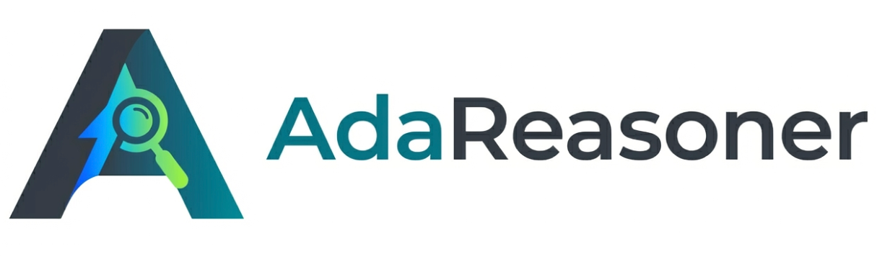
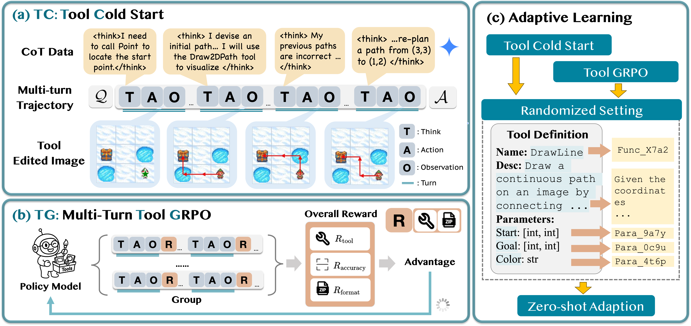
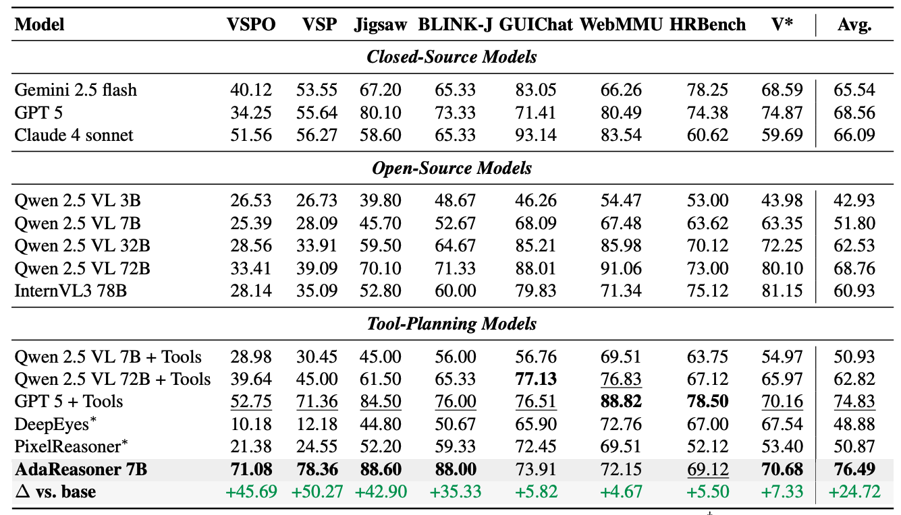
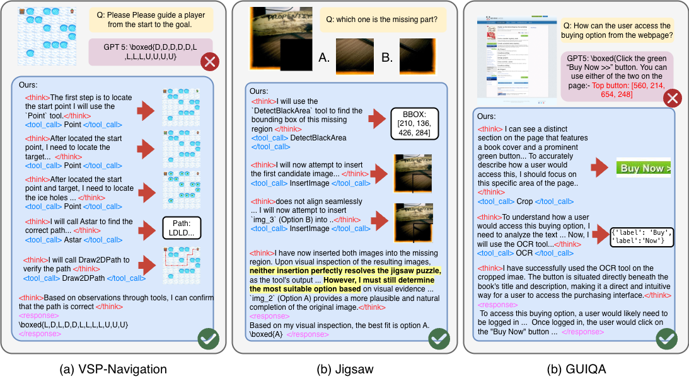

An overview of our AdaReasoner framework.
Many visual reasoning problems require acting through tools, measuring, transforming, or simulating intermediate states rather than solving everything in a single forward pass. Effective reasoning, therefore, hinges on knowing which tools to use, when to invoke them, and how to compose them over multiple steps, even when faced with new tools or new tasks. We introduce AdaReasoner, a family of multimodal models that learn tool use as a general reasoning skill rather than as tool-specific or explicitly supervised behavior.
AdaReasoner performs adaptive and generalized tool-using.
AdaReasoner is enabled by (i) a scalable data curation pipeline exposing models to long-horizon, multi-step tool interactions; (ii) Tool-GRPO, a reinforcement learning algorithm that optimizes tool selection and sequencing based on end-task success; and (iii) an adaptive learning mechanism that dynamically regulates tool usage. Together, these components allow models to infer tool utility from task context and intermediate outcomes, enabling coordination of multiple tools and generalization to unseen tools. Empirically, AdaReasoner exhibits strong tool-adaptive and generalization behaviors: it autonomously adopts beneficial tools, suppresses irrelevant ones, and adjusts tool usage frequency based on task demands, despite never being explicitly trained to do so. These capabilities translate into state-of-the-art performance across challenging benchmarks, improving the 7B base model by +24.9% on average and surpassing strong proprietary systems such as GPT-5 on multiple tasks, including VSP and Jigsaw.
Autonomously adopts beneficial tools and suppresses irrelevant ones
Complex multi-turn tool interactions with reflection capabilities
Generalizes to unseen tools and novel tasks beyond training


AdaReasoner-7B demonstrates advanced capabilities for multi-turn, tool-assisted reasoning and reflection.
Precise object localization
Visualization and verification
Shortest path planning
Text recognition
Region extraction
Missing region detection
Hypothesis testing
@article{song2026adareasoner, title={AdaReasoner: Dynamic Tool Orchestration for Iterative Visual Reasoning}, author={Song, Mingyang and Sun, Haoyu and Gu, Jiawei and Li, Linjie and Xu, Luxin and Krishna, Ranjay and Cheng, Yu}, journal={arXiv preprint arXiv:2601.18631}, year={2026} }